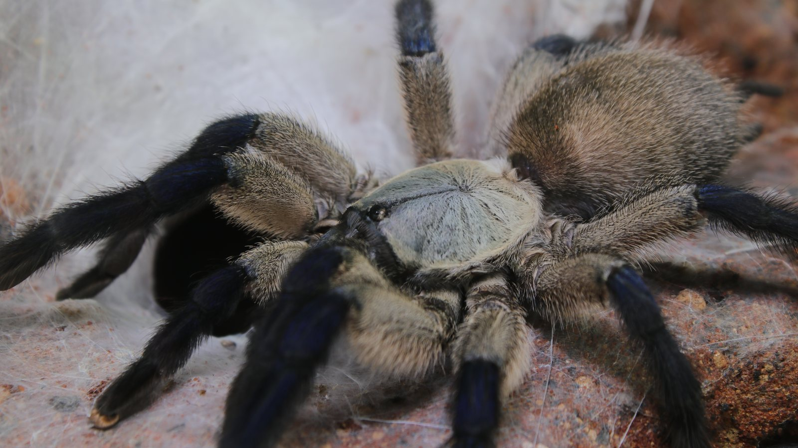
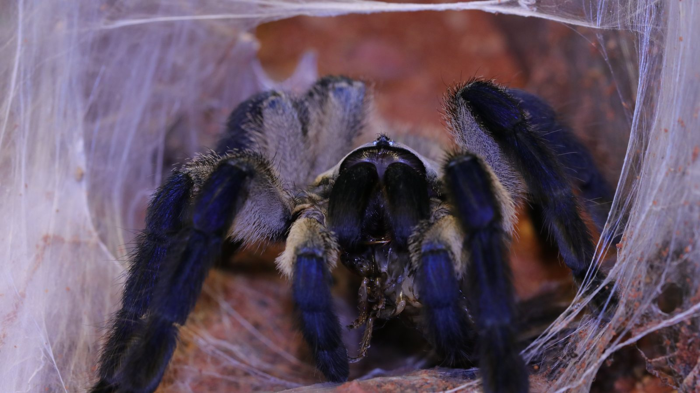
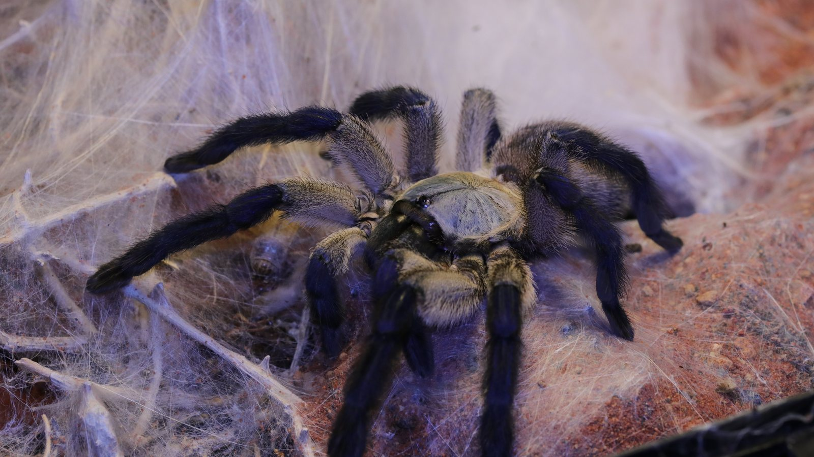

A terrestrial, burrow- and web-associated tarantula from the island of Socotra. Silk can connect the retreat, substrate, and nearby structures into a broad working area.
Species profile · Bella
Monocentropus balfouri
Meet Bella
Bella is one of two Monocentropus balfouri currently in my care. Her profile uses the stronger open portrait, with blue legs and a pale carapace visible across the frame.

Scientific nameMonocentropus balfouri
FamilyTheraphosidae
Native rangeSocotra, Yemen
TaxonomyAccepted species
SexConfirmed female
In the wild
Natural history.
Blue legs, a pale carapace, and a darker abdomen give the species a distinctive high-contrast appearance. Bella and Belinda still have separate individual histories.
Bella's photographs and Codex data belong only to Bella. A secure retreat, deep substrate, and web anchor points allow her enclosure to develop around her own choices.
Taxonomy and range
Monocentropus balfouri is an accepted theraphosid endemic to Socotra, Yemen. A recent integrative revision retained the species in Monocentropus and documented its island habitat and burrows while reorganising related Arabian and African taxa.
Burrows, shelter, and activity
Field photographs and collection experience both place the species around silk-lined ground burrows. The web can spread through nearby soil and structure, joining several entrances into a concealed working area that is far larger than the visible spider.
Feeding ecology
Arthropods are taken by ambush at or beyond the retreat. The species is famous in captivity for tolerating group living and sometimes feeding near conspecifics, but the frequency and organisation of social behaviour in the wild remain poorly quantified and should not be overstated.
Defence, senses, and movement
There are no urticating hairs. Concealment, speed, and defensive posturing are more relevant, while the contrasting blue-and-cream colour is most obvious only when the animal leaves cover.
Life in the collection
Meet Bella.
Bella is one of two Monocentropus balfouri in my care. Her record remains separate from Belinda’s so that photographs, feeding outcomes, molts, and future observations continue to describe the correct individual.



From Instagram
Posts & reels.
From the channel
Related viewing.
Introvertebrates on YouTube
Discover Bella: Monocentropus balfouri
A short individual introduction to Bella and her distinctive blue-and-cream colouring.
Personal observations
From the Codex.
Introvertebrates Codex
Bella · care history
A privacy-safe summary of this resident’s time in care, feeding outcomes, molts, and measurements. These are observations from the Introvertebrates collection, not species-wide averages.
Awaiting a privacy-reviewed Codex export. No invented statistics are shown.
Never published here: raw notes, record IDs, seller or breeder details, enclosure identifiers, local file paths, or exact private event dates.
Continue exploring
Related profiles.


Read further
Sources.
- World Spider Catalog — Monocentropus balfouriView the source.
- ZooKeys — integrative revision of Monocentropus and Socotran habitatView the source.